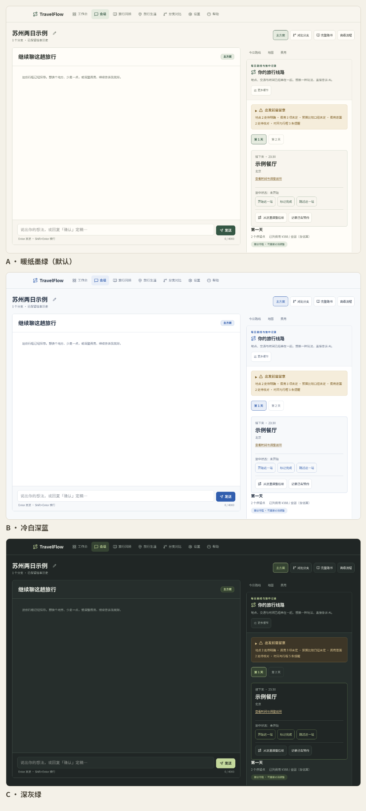

本地优先的数据
会话、路书与票据记录默认保存在本机 SQLite 文件；配置文件含 API Key，保留在本地
.env，不进入版本库。
界面
桌面端与手机端使用同一份数据。以下截图来自实际界面，使用隔离样例数据，展示主要工作区、工作台与主题。

功能
规划、旅中执行与旅后回顾放在同一条记录线上，修改和失败恢复都保留上下文。
会话、路书与票据记录默认保存在本机 SQLite 文件；配置文件含 API Key，保留在本地
.env，不进入版本库。
每次修改生成新版本，可从任意版本分叉、对比或回退；替换活动后自动重算当天路线，旧版本保持不变。
支持多个检索源；接入高德后可查看地点地图、步行、公交与驾车耗时，以及地点间步行距离。未知信息会单独标注。
今日路线支持完成、跳过与从当前位置调整后续安排；预约、实际消费、退款与报销分别记录，费用未知不当作零。
按事实模板整理旅行回顾，汇总到访城市与足迹，常用旅行偏好可复用到下一次规划。
行程可导出为 Markdown 或单文件 HTML，双击即可在浏览器打开；导出内容禁用原始 HTML，避免脚本注入。
快速开始
需要 Git、uv 0.5 以上与 Node.js 20 以上。首次启动会安装依赖并编译前端，可能需要几分钟。
git clone https://github.com/wuqiuwangtian/TravelFlow-AI.git
cd TravelFlow-AI
./start.sh # macOS / Linux / WSL
start.bat # Windows：双击运行脚本会检查环境、安装依赖，并在前后端都就绪后打开浏览器。按 Ctrl + C 同时停止两个服务。
访问 http://localhost:3100，在「设置」里填写模型与检索服务，然后描述行程。 没有 API Key 也可以先启动并查看界面。
默认前端端口 3100、后端端口 8000；可用 FRONTEND_PORT、BACKEND_PORT 调整。
已知限制
backend/data/travelflow.db 与
backend/.env，不要提交或分享含密钥的配置。
许可
TravelFlow AI 以 MIT 许可开放源码，可自由使用、修改与分发。第三方组件与许可见 THIRD_PARTY_NOTICES.md。
v1.0.0 为纯源码发布，不提供预构建二进制、容器镜像或托管实例。